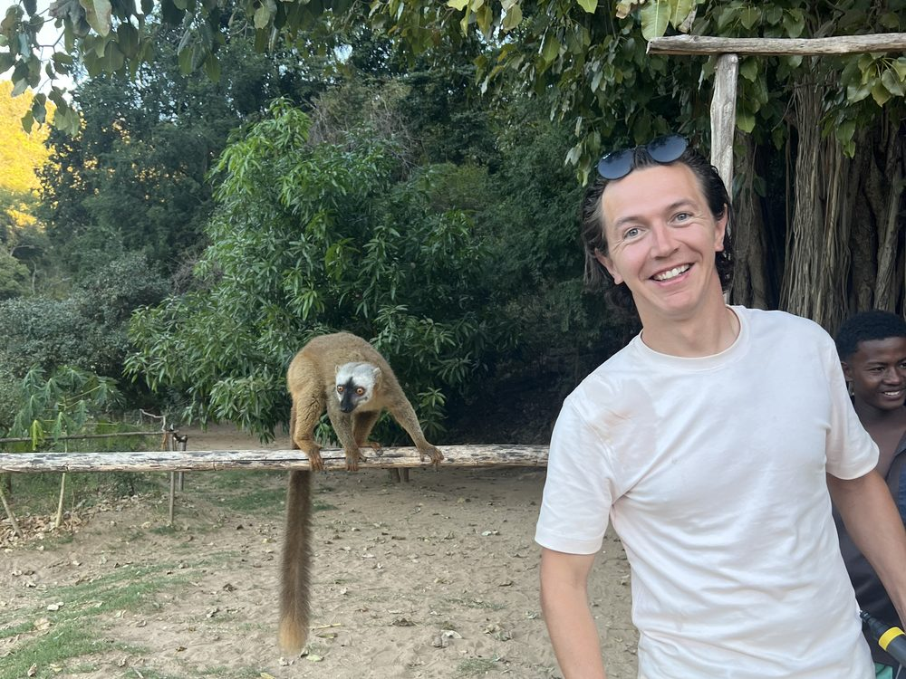

Coast, Canyons, Climbing & Rainforest
Experience Madagascar Part Two
19 – 28 August 2027 · 10 days · from €2,800 / £2,425
The idea
The stunning landscapes of Madagascar are not for the weak — there is little infrastructure, few roads, and no other group tour companies operating for the younger demographic. 90% of Madagascar’s mammals, plants & reptiles cannot be found anywhere else on Earth, and it is one of 17 of the most biodiverse countries on the planet, so there is so much to see.
With 112 lemur species, colourful chameleons, and baobabs that look like somebody planted them upside down, we traverse across great distances to show you the unique diversity. This tour is active and dynamic: you will be hiking, rock climbing, and doing via ferrata through the canyons & mountains in the glorious southern national parks. You will do a number of nocturnal and day walks to spot wildlife, and partake in tree planting to preserve Madagascar’s most valuable rainforests. Each day is memorable, and we value the unique opportunity to eat, dance, and laugh amongst local communities.
We have a few options for you:
- Experience Madagascar Part One: Lemurs, Baobabs, & Canoeing the Wild Tsiribihina — starting in the capital (Tana), and finishing in Morondava on the west coast.
- Experience Madagascar Part Two: Coast, Canyons, Climbing, & Rainforest — continues from Morondava, south to Ifaty, and we cover the southern section from canyons to rainforest, finishing back in the capital.
You may do Part One, Part Two, or the whole Experience Madagascar Grand Tour.
Day by day
-
1
Antananarivo to Ifaty
The whole group will meet in Antananarivo, flying south to Tulear where our new drivers team will collect us and bring us to our beach-side abode in Ifaty. Enjoy a swim in the ocean or pool before we start evening activities that include local crafts, drinks & your first team dinner.
-
2
The Coast
This morning you will have a chance to ride in a traditional Malagasy pirogue, and snorkel the crystal blue waters of the south west coast. We then journey by land from the sea to the canyon-riddled outback, settling in one of the most scenic parks in Madagascar.
-
3
Canyons
Our group heads deep into the national park with a local expert guide, learning of the traditional tribal rituals, spotting King Julien and his cronies in the wild, and taking a dip in two oasis-style swim spots deep in the park before looping back on an immersive hike.
-
4
Canyons & Climbing
Today you have the option to rock climb the cavernous canyon walls, or get harnessed up and come via ferrata on the outer canyon walls. This evening we drive into a famous mountain range, enticing Madagascar’s biggest adventurers yet.
-
5
Tsaranoa
Our local experts will split us up to partake in activities of your choice today. We have a moderate hike, a difficult hike with ropes, and the opportunity to rock climb on the vertical face of a mountain. Today will challenge you, but we will be there to guide you through each activity.
-
6
Ranomofana
Heading through the mountainous valleys, we continue through Malagasy farmland, reaching one of Madagascar’s most pristine natural rainforests: Ranomofana. This afternoon we will hike to see as many lemur species as we can. This evening we also have a night walk to discover chameleons, reptiles, & the infamous mouse lemurs. (Mort!)
-
7
Ranomofana
We have a morning hike on a different side of the national park, continuing our search for numerous endemic species and enjoying the lush forest. This afternoon, we have the opportunity to discover a tree nursery and tree plant among Madagascar’s local heroes who live to preserve these valuable rainforests.
-
8
Antsirabe
We set off from the rainforest canopies to the Malagasy farm and rural villages, stopping to have a much-loved soccer match with keen energetic kids. We land in Antsirabe, a fun-filled city of music and food, to enjoy a dance and evening out on the town with Malagasy beats.
-
9
Antananarivo
With a few more stops along the way, the group finishes by early afternoon back in “Tana.” There will be time to check out the local parliament buildings and city square, and have our farewell family meal.
-
10
Departure Day, or Wait in the Capital for Part One
For those finishing up in Madagascar, today is your departure day. For those heading out on Experience Madagascar Part One: Lemurs, Baobabs & Canoeing the Wild Tsiribihina, there is time to hang around in the capital in between.
What’s included
In the price
- Tour leader with you for the whole trip
- Airport pick-up to the group hotel
- Local tour, national park & climbing guides
- Trip photographer
- Eco lodges & hotels, local-owned and locally run
- All activities: canoeing, camping, hiking and the rest
- Drivers, transport & fuel
- National park permits & entrance fees
- Internal flights
- All breakfasts & most dinners
Not in the price
- International flights
- Travel insurance (required)
- Lunches
- Your visa (online, or on arrival in the capital)
- Personal items: SIM card, laundry, alcohol
- Optional single room supplement